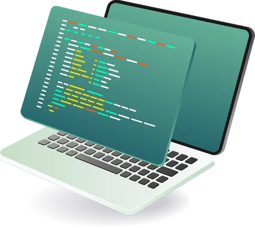
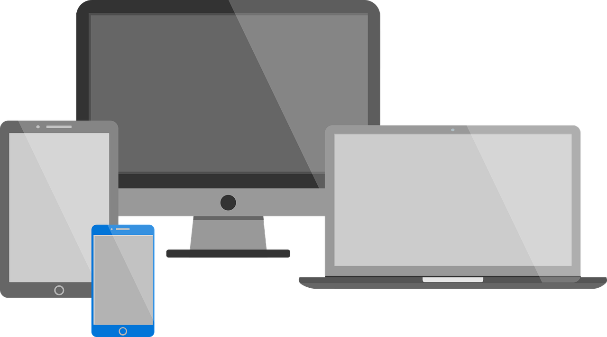
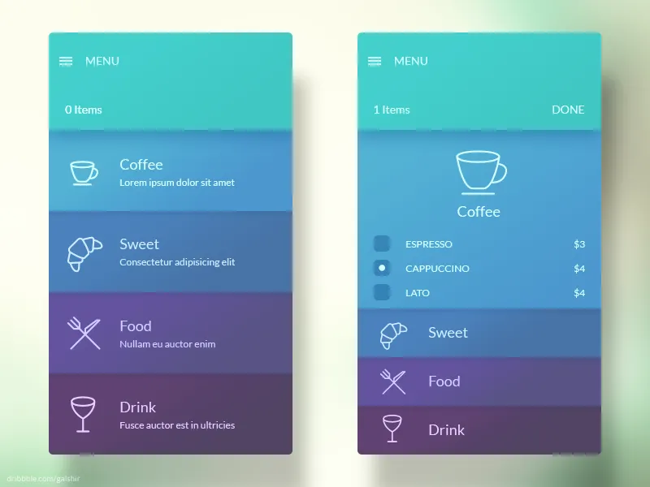
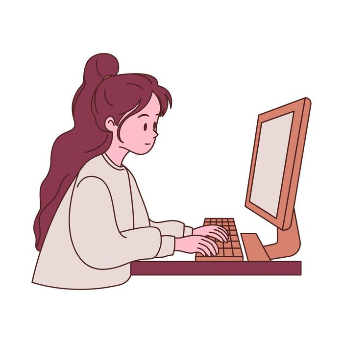
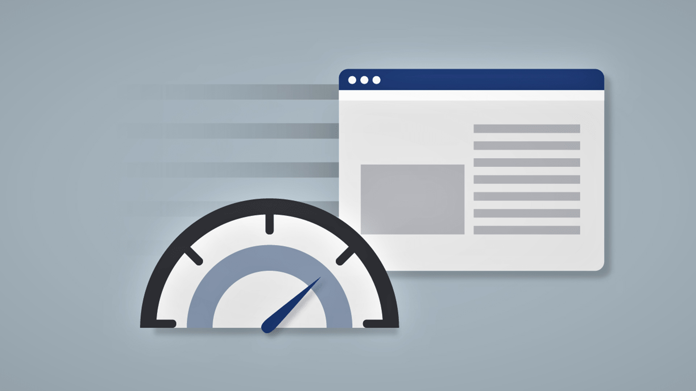

Современная веб-разработка постепенно становится не только технологичнее, но и внимательнее к повседневным потребностям человека. Пользователь открывает страницу, чтобы получить информацию, выполнить действие или найти ответ на конкретный вопрос. Поэтому красивое оформление должно помогать решать задачу, а не отвлекать от неё. На первый план выходят понятная структура, предсказуемая навигация, читаемый текст и аккуратная работа с деталями. Даже небольшой учебный проект позволяет потренировать эти принципы и увидеть, как отдельные решения влияют на общее впечатление от сайта.
Адаптивность как основа

Одно из основных направлений развития сайтов связано с разнообразием устройств. Одну и ту же страницу могут просматривать на большом мониторе, небольшом ноутбуке, планшете или смартфоне. Адаптивная вёрстка позволяет перестраивать расположение блоков в зависимости от доступной ширины. Вместо жёстких размеров разработчик использует гибкие контейнеры, относительные единицы и медиазапросы. Важно проверять не только внешний вид, но и удобство взаимодействия: ссылки должны оставаться заметными, кнопки достаточно крупными, а текст не должен требовать постоянного увеличения пальцами.
Семантика и доступность

Другой важный принцип заключается в правильном использовании HTML. Заголовки описывают структуру материала, навигация объединяет переходы между страницами, а основная область содержит главное содержание. Семантические элементы помогают не только разработчику читать исходный код, но и вспомогательным технологиям понимать назначение разделов. Доступность также включает достаточный контраст, видимый фокус клавиатуры, осмысленные подписи ссылок и альтернативные описания изображений. Такие решения полезны людям с разными возможностями и делают интерфейс устойчивее в различных условиях использования, включая яркое освещение или временные ограничения подвижности.
Скорость и разумная простота

Скорость загрузки остаётся важной частью пользовательского опыта. Если страница долго показывает пустой экран, посетитель может уйти раньше, чем увидит содержание. Поэтому разработчики оптимизируют изображения, сокращают ненужные зависимости и стараются не подключать тяжёлые инструменты ради простых эффектов. Для небольшого портфолио часто достаточно обычных HTML и CSS. Указание размеров изображений помогает заранее выделить место на странице и уменьшить скачки макета. Отложенная загрузка картинок ниже первого экрана позволяет браузеру сначала сосредоточиться на ресурсах, которые нужны посетителю прямо сейчас.
Системный подход к оформлению

Визуальная целостность достигается не количеством украшений, а последовательностью решений. Если одинаковые элементы имеют похожие размеры, отступы и состояния, человеку проще освоиться на странице. Общие цвета, радиусы скругления и параметры типографики удобно хранить в CSS-переменных. Тогда изменение оформления не требует поиска каждого отдельного значения по всему файлу. Сетки Grid и гибкие контейнеры Flexbox помогают распределять пространство без табличной вёрстки. При этом важно выбирать инструмент по задаче: для меню часто достаточно Flexbox, а для двухмерного расположения карточек удобно использовать Grid.
Практика важнее сложных эффектов
Начинающему разработчику полезно двигаться от простого к сложному. Сначала стоит продумать содержание и связи между страницами, затем создать семантическую разметку и только после этого переходить к оформлению. Проверка результата на узком экране быстро обнаруживает слишком широкие блоки, неудобные отступы и плохо читаемые подписи. Отдельное внимание нужно уделять работе ссылок и доступности управления с клавиатуры. Такой подход превращает лабораторную работу в полноценное упражнение по проектированию интерфейса, где каждое решение можно объяснить и при необходимости улучшить.